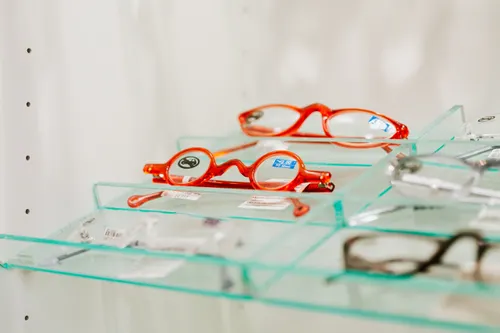
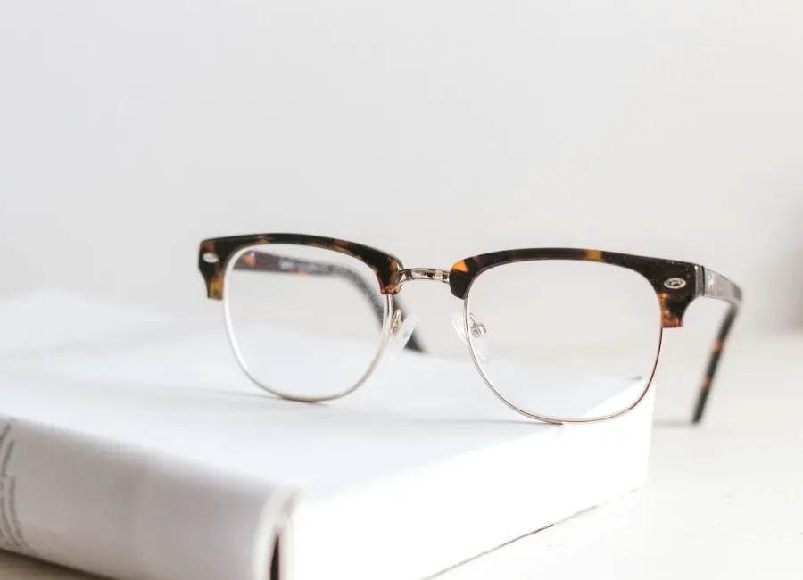
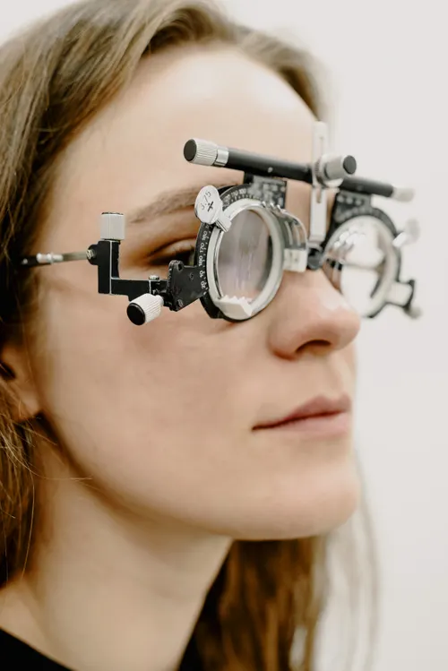
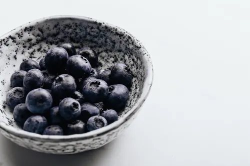

The Monograph Journal
An ongoing archive documenting optical material science, facial morphology, architecture, and the cultural history of eyewear.

The Architectural Renaissance of Milled Bio-Acetate
Why modern eyewear collectors are turning their gaze away from petroleum-based plastics and back to the tactile, warm soul of aged cellulose acetate cured over twelve months in Northern Italy.
In this deep-dive essay, our creative director breaks down the microscopic molecular differences between injection resins and cured organic bio-acetate slabs, exploring how natural body heat subtly shapes the frame to your unique temples over time.
2026 Architectural Eyewear Movements
The definitive structural shifts observed on international runways and in modern design ateliers.

The Shift Toward Subtle Octagons and Hexagons
Replacing traditional round frames with faceted geometric perimeters that catch diagonal rim lighting.
Read More →
Warm Neutrality: Honey, Butterscotch & Cognac
How earthy, translucent horn and honey acetates create softer contrast than stark jet black against fair and olive complexions.
Read More →
The Revival of Minimalist Rimless Construction
Engineered tension-mounted beta-titanium bridges that let the wearer's gaze command full visual priority.
Read More →Styling Eyewear with Tailored Wardrobes
Just as a bespoke suit demands shoes of balanced proportion, an eyewear frame must harmonize with collar angles, lapel widths, and outerwear silhouettes.
We explore how heavy 10mm acetate navigator frames anchor double-breasted cashmere overcoats, while featherweight titanium wire frames complement minimalist unstructured linen tailoring.
Technical Lens & Frame Compendiums
Essential reading for understanding refractive indices, polarization harmonics, and hinge mechanics.
Mineral vs. CR-39 Lenses
Why mineral glass yields diamond-like scratch defense, and when organic polymers are preferable for high sport prescriptions.
View Compendium →The Science of Blue Attenuation
Filtering high-energy 415–455nm wavelengths without muddying monitor color balance for creative professionals.
View Compendium →Hinge Engineering Standards
A breakdown of 3-barrel, 5-barrel, and Japanese barrel-less spring hinges under tension endurance testing.
View Compendium →Pupillary Distance & Decentration
How optical centers must align precisely with your visual axis to eliminate peripheral prism distortion.
View Compendium →Latest Journal Dispatches
Read our recent monographs from craftsmen, opticians, and guest contributors worldwide.

Caring for Luxury Eyewear: Maintaining Luster and Hinge Tension
A master optician’s maintenance ritual for preventing acetate dehydration and loose hinge screws.
Read Article →
Fukui’s Secret: Century-Old Titanium Metallurgy
How the isolated mountain valleys of Sabae became the global epicenter of featherweight cold-forged metals.
Read Article →The Three-Frame Capsule Wardrobe
Why every minimalist needs one architectural acetate, one titanium wire, and one polarized navigator.
Read Article →Optician's Field Notes
Quick rules of thumb curated by our master dispensing opticians.
Eyebrows Follow Frames
Your upper frame rim should follow the natural curve of your eyebrow without cutting through it or sitting more than 3mm above.
Never Rest on Your Head
Wearing frames atop your head stretches the acetate temple spread permanently, leading to slipping and loose bridge grip.
Avoid Hot Water Rinse
Hot tap water degrades anti-reflective lens coatings and warps natural bio-acetate. Always use lukewarm water and microfiber cloths.
Case Storage Always
Store your glasses exclusively in rigid leather cases to protect anti-reflective multicoats from abrasive airborne dust particles.